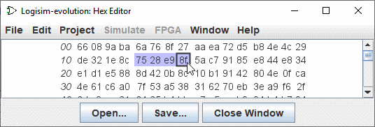

Hex editor
Logisim כולל עורך משולב משולב לצפייה ועריכה של תוכן הזיכרון. כדי לגשת אליו, העלה תפריט מוקפץ עבור רכיב הזיכרון (לחץ לחיצה ימנית על הרכיב ) ובחר | ערוך תוכן.... | או במאפיינים בחר תוכן.

המספרים הנטויים בצד שמאל מציגים כתובות זיכרון, כתובות בהקסדצימלי. המספרים האחרים מוצגים ערכים המתחילים מאותה כתובת זיכרון; עורך הhex עשוי להציג ארבעה, שמונה או שישה עשר ערכים בכל שורה, תלוי מה מתאים לחלון. כדי לעזור בספירה, לכל קבוצה של ארבעה ערכים יש רווח גדול יותר בין.
ניתן לנווט בזיכרון באמצעות פס הגלילה או באמצעות המקלדת (מקשי החצים , בית, סוף, עמוד למעלה ודף למטה). הקלדת תווים הקסדצימליים תשנה את הערך שנבחר כעת.
אתה יכול לבחור טווח של ערכים על ידי גרירת העכבר, לחיצה על Shift על העכבר, או ניווט בזיכרון עם המקלדת תוך לחיצה על מקש shift. ערכים עשויים להיות הועתק והודבק באמצעות התפריט | ערוך | או מקש הקיצורים המשויך (Ctrl-C Ctrl-V,Ctrl-X...); ניתן להעביר את הלוח גם ליישומים אחרים.
שני לחצנים (פתח..., שמור..) מאפשרים לך לטעון או לשמור נתונים מ- קוֹבֶץ.
הבא: תפריטים וקבצים קופצים .